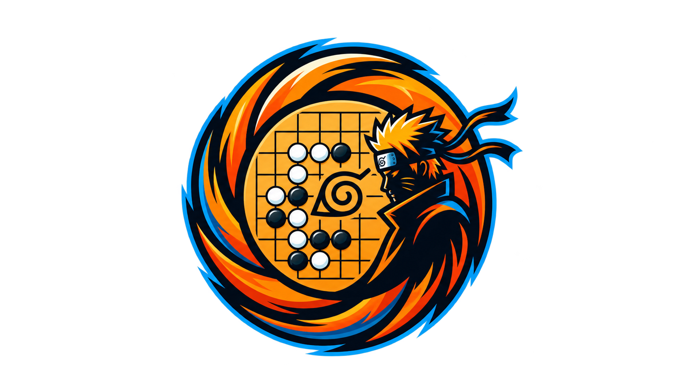

Qui suis-je ?
Je m'appelle Mathias Fontagne et je suis étudiant en Bachelor en cybersécurité à Ynov Bordeaux. Je souhaite développer mes compétences en programmation, en développement logiciel et en cybersécurité.
Étudiant en Bachelor Informatique à Ynov Bordeaux, je m'intéresse au développement, aux nouvelles technologies et à la cybersécurité.

Je m'appelle Mathias Fontagne et je suis étudiant en Bachelor en cybersécurité à Ynov Bordeaux. Je souhaite développer mes compétences en programmation, en développement logiciel et en cybersécurité.
Je suis autonome, capable de travailler seul comme en équipe, et à l'aise à l'oral. J'apprécie les projets qui permettent d'apprendre en pratiquant et de présenter le résultat de mon travail.
Localisation : Bordeaux, France
Mobilité : Bordeaux et alentours
Permis : Permis B, véhicule personnel
Date de naissance : 24/06/2008
Capacité à travailler de manière autonome, à organiser mes tâches et à rechercher des solutions par moi-même.
Habitude de collaborer avec d'autres personnes, de partager des idées et de participer à la réalisation de projets communs, notamment lors de la création de notre RPG en Go à Ynov.
Capacité à m'exprimer à l'oral, à expliquer mes idées et à présenter des projets devant différents publics.
Envie d'apprendre, de relever de nouveaux défis et de continuer à chercher des solutions lorsque je rencontre des difficultés.
Capacité à découvrir de nouveaux outils, à apprendre de nouvelles méthodes de travail et à m'adapter aux besoins d'un projet.
Programmation et création de projets informatiques, notamment dans le cadre de ma formation à Ynov.
Connaissances fondamentales en gestion de données et en fonctionnement des réseaux informatiques.
Utilisation d'environnements de développement et d'outils pour gérer, sauvegarder et partager le code de mes projets.
Applications permettant d'échanger avec une équipe, d'organiser le travail et de suivre l'avancement de projets collectifs.
Outils utiles pour rédiger de la documentation, préparer des présentations et organiser des informations.
Des projets qui me permettent de mettre en pratique mes connaissances.
Un RPG inspiré de l'univers Naruto, développé en équipe de trois étudiants à Ynov Bordeaux. Le jeu propose des ennemis, un inventaire et des équipements.
Découvrir le projet
Un outil en ligne de commande qui corrige et met en forme un texte automatiquement. Réalisé dans le cadre d'un projet à Ynov Campus.
Découvrir le projetUn algorithme de tri non comparatif, base sur deux piles et d'un ensemble d'instructions
Découvrir le projetRetrouvez mes travaux, exercices de programmation et projets personnels sur mon profil GitHub.
Voir mon GitHubMes formations et mes premières expériences professionnelles.
Formation en informatique avec un intérêt particulier pour la programmation, le développement et la cybersécurité.
Spécialités Mathématiques et Numérique et Sciences Informatiques (NSI).
Découverte de la communication avec les clients et de la gestion des ressources.
Découverte du fonctionnement d'un magasin : mise en rayon, vente et participation à la gestion quotidienne du magasin.